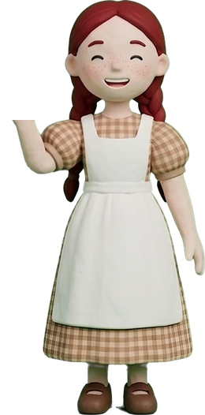
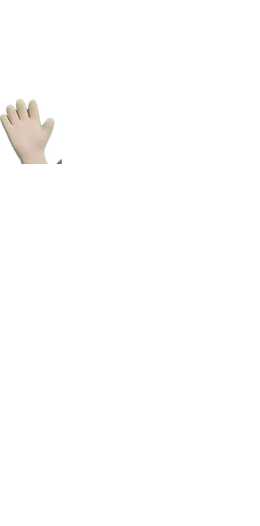

말로는 다 전하기 어려운 이야기를
80초짜리 영화 한 편으로.
마음에 오래 둔 장면 하나를 골라, 4주 동안 함께 한 편의 영화로 끝까지 만듭니다.
설계는 🍎 앤이 짓습니다. 남길 한 문장을 들려주면 대본·그림 프롬프트·만드는 법을 지어 주는, 살롱의 클로드 친구입니다.
무엇을 남길지, 어떤 목소리로 말할지는 만드는 사람이 정합니다. 모임 시간은 고르고, 확인하고, 내 목소리를 입히는 데 씁니다.
앤을 소개합니다. 

『빨강 머리 앤』의 앤에게서 이름을 빌렸습니다. 머릿속 장면을 붙잡아 말로 그려 내던 아이처럼, 내 안의 한 문장을 손으로 따라 만들 장면으로 옮겨 줍니다.
- 먼저 묻습니다. 어떤 영상인지, 남길 한 문장은 무엇인지, 누가 볼지. 이미 말한 것은 다시 묻지 않고, 빠진 것만 하나씩.
- 세 장을 지어 줍니다. 대본(컷표) · 그림 프롬프트 · 만드는 법. 복사해 붙이면 바로 쓸 수 있게.
- 막히면 곁에 있습니다. 그림이 이상하게 나올 때 고칠 문장을 찾아 줍니다. 세 편을 만들며 쌓은 기록이 앤 안에 있습니다.
- 손은 내 것으로 남깁니다. 생성 버튼, 결제, 게시는 언제나 만드는 사람이 누릅니다.
대화 속 앤은 늘 🍎로 말을 시작합니다. 앤을 깨우는 열쇠말은 오리엔테이션에서 나눕니다.
내 이야기가 있는 분이면 됩니다.
- 시청각 교육자료를 만들고 싶은 교사·강사
- 마음속 이야기를 영화로 남기고 싶은 분
- 함께 하는 이야기가 있는 모임·단체
- 제품이나 일하는 모습을 영상으로 소개하고 싶은 공방·1인 브랜드
AI 영상 도구도, 클로드도 한 번도 써 보지 않았어도 됩니다. 계정 만들기와 앤 데려오기부터 0주차에 함께 합니다.
한 주에 한 걸음씩.
앤 데려오기, 도구 한 바퀴
다 같이 내 클로드에 앤을 데려오고, 앤을 깨우는 열쇠말을 나눕니다. 그다음 4주 동안 쓸 도구를 진짜 주소로 하나씩 들어가 봅니다 — 그림을 그리는 나노바나나(제미나이), 그림을 움직이는 영상 도구 Hailuo·Kling. 도구마다 무료로 어디까지 되는지도 함께 봅니다.
한 문장에서 설계 세 장으로
영화로 만들 이야기 하나에서 남길 한 문장을 붙잡고, 그 문장으로 다 같이 앤을 따라갑니다. 앤의 질문에 답하면 대본·그림 프롬프트·만드는 법 세 장이 나옵니다. 그다음 대본을 한 사람씩 함께 읽으며, 이것만은 꼭 전해져야 하는 장면 ‘심장 컷’을 함께 찾습니다.
기준 그림과 심장 컷 먼저
앤이 지은 프롬프트로 인물·소품·장소 기준 그림 세 장을 만들고, 심장 컷부터 뽑습니다. 서로의 그림을 보고 “이 사람이 방금 무엇을 했나요?” 한 마디로 확인합니다. 막히면 앤에게 그 자리에서 물어봅니다.
그림을 움직이고, 한 편으로 묶기
그림을 영상 도구로 움직이는 법을 함께 배웁니다. 앤의 「만드는 법」에 적힌 움직임 문장을 그대로 씁니다. 이어서 움직인 클립을 CapCut으로 옮겨 한 편으로 이어 붙이는 법을 배웁니다.
함께 상영
불을 끄고, 서로의 영화를 한 편씩 함께 봅니다. 영화마다 남길 한 문장이 어떻게 전해졌는지 나누고, 다음 편에 물려줄 것을 챙깁니다.
한 주에 모임 2시간과 혼자 작업하는 시간이 듭니다.
한 편을 만들면,
다음 편은 앤과 만듭니다.
준비하실 것
- 기간
- 2026년 11월 5일(목) ~ 11월 26일(목), 4주
개강 전 오리엔테이션 11월 3일(화) 저녁 9~10시 - 모임
- 매주 목요일 저녁 8~10시 · 줌
- 신청 마감
- 11월 1일(일) · 정원이 먼저 차면 그때 마감합니다
- 정원
- 6명
11월 1일(일)까지 신청이 3명 이하면 수업을 열지 않고 참가비는 모두 환불해 드립니다. - 준비물
- 구글 계정, Claude 계정(앤이 살 곳), 노트북(만들기용), 휴대폰(얼굴·목소리, 녹음용)
- 줌 참여
- 휴대폰과 노트북 두 기기로 들어옵니다. 휴대폰으로는 함께 걷는 사람의 화면을 보고, 노트북으로는 그 자리에서 따라 만듭니다. 한 화면에서 보며 따라 하기는 생각보다 어렵습니다. 노트북은 소리를 끄고, 막혔을 때 내 화면을 보여 주는 데도 씁니다. 두 기기로 들어오는 법은 오리엔테이션 전에 한 장으로 안내드립니다.
- 문의
- 카카오톡 문의 오픈채팅방에서 신청 전 궁금한 점을 물어보세요.
- 참가비 결제
- 현지 사정으로 계좌 이체로만 받습니다. 카드 결제와 소득공제는 어렵습니다.
- 녹화
- 모임은 녹화해 참가자 대화방에서만 나눕니다. 다시 보며 따라 하실 수 있습니다.
- 도구 비용
- 모든 도구를 무료로 씁니다. 유료는 더 큰 그림이나 더 많은 영상이 필요할 때만 선택하시면 됩니다.
다섯 가지 약속
- 남의 음원은 쓰지 않습니다.
- 실존 인물·유명 캐릭터를 닮은 결과물은 내보내지 않습니다.
- 도구는 확인한 주소로만 들어갑니다.
- 실제 사람의 이야기는 어디까지 보여 줄지 먼저 정합니다.
- 화면 안 글자는 AI에게 맡기지 않고 편집에서 넣습니다.
스윗워러
캄보디아에서 글을 쓰고 한국어를 가르칩니다. 기숙사 리더교육에서 말로 잘 전해지지 않는 장면을 AI 영상 수업 자료로 만들어 왔습니다.
2026년 8월, 82초짜리 「네가 정해」를 하루 만에 끝까지 만들었습니다. 그 뒤로 두 편을 더 끝까지 만들며 걸은 순서와, 막히고 풀었던 기록을 앤에게 담았습니다. 이 살롱에서는 그 길을 앤과 함께 걷습니다.
궁금하실 것 같아서
AI 영상 도구를 하나도 몰라요.
괜찮습니다. 0주차에 계정 만들기와 로그인부터 같이 합니다. 프롬프트는 앤이 지어 주니 외우지 않아도 됩니다. 복사해 붙이고, 나온 그림을 보고 고르는 것부터 함께 합니다.
클로드를 써 본 적이 없어요.
괜찮습니다. 클로드 계정을 만들고 앤을 데려오는 일은 0주차 오리엔테이션에서 한 단계씩 같이 합니다. 그다음부터는 앤에게 말을 걸기만 하면 됩니다.
앤이 다 만들어 주면 제가 할 일은 뭔가요?
앤은 설계도를 그립니다. 무엇을 남길지 정하고, 그림을 뽑아 고르고, 목소리를 입히고, 한 편으로 묶는 것은 만드는 사람의 손입니다. 생성 버튼과 결제와 게시도 늘 내가 누릅니다.
참가비 말고 돈이 더 드나요?
무료로 시작합니다. 그림은 무료 계정으로도 영화 한 편을 충분히 만들 수 있고, 앤도 무료 클로드 계정에 데려올 수 있습니다. 무료는 쓸 수 있는 양에 한도가 있지만 몇 시간 뒤면 다시 채워집니다. 큰 그림이 필요하거나, 영상을 더 많이·워터마크 없이 만들고 싶을 때만 한 달 결제를 선택하시면 됩니다.
모임에 빠지면 어떻게 하나요?
모임은 모두 녹화해 참가자께 나눕니다. 빠진 날은 녹화본을 보며 그 주 단계를 따라 하시면 됩니다. 앤은 언제든 그 자리에서 이어 걸어 주고, 혼자 하다 막힌 곳은 다음 모임에서 함께 봅니다.
신청한 사람이 적으면 어떻게 되나요?
오리엔테이션 이틀 전인 11월 1일(일)까지 신청이 3명 이하면 수업을 열지 않습니다. 그때는 받은 참가비를 모두 환불해 드립니다.
디퍼 OS를 쓰지 않아도 되나요?
네, 없어도 참여할 수 있습니다. 디퍼 OS에 모아 둔 씨앗 문장이 있다면 영화의 출발점으로 쓰기 좋습니다.
완성한 영화를 어디에 올리나요?
영화는 만든 분의 것입니다. 살롱 홍보에는 동의해 주신 분의 작품만 씁니다. 살롱 안에서는 닉네임으로 부릅니다.
더 궁금한 점은 문의 오픈채팅방에서 물어보세요.
당신의 이야기를
한 편의 영화로.
11월 5일 목요일 저녁, 불 꺼진 상영관에서 만나요.
계좌 이체로만 받습니다 (카드 결제·소득공제 어려움)
3명 이하면 수업을 열지 않고 참가비는 환불해 드립니다